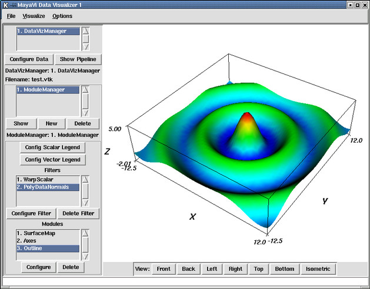

Table of Contents
If you have installed MayaVi from the sources and are not using a binary release, then you can use MayaVi as a Python module. This chapter details how you can use MayaVi as a Python module. If you are looking for a powerful, interactive, cross-platform Python interpreter you might be interested in IPython.
Its very easy using MayaVi as a Python module. Thanks to Tkinter, it is also possible to use MayaVi from the Python interpreter. This means that one can script MayaVi! This is a pretty powerful and useful feature. To illustrate using MayaVi as a module and its scriptability, we will consider a few simple examples where the user generates some data and a VTK file and then uses MayaVi to visualize the data.
>>> # generate the data.
>>> from Numeric import *
>>> import scipy
>>> x = (arange(50.0)-25)/2.0
>>> y = (arange(50.0)-25)/2.0
>>> r = sqrt(x[:,NewAxis]**2+y**2)
>>> z = 5.0*scipy.special.j0(r) # Bessel function of order 0
>>> # now dump the data to a VTK file.
>>> import pyvtk
>>> # Flatten the 2D array data as per VTK's requirements.
>>> z1 = reshape(transpose(z), (-1,))
>>> point_data = pyvtk.PointData(pyvtk.Scalars(z1))
>>> grid = pyvtk.StructuredPoints((50,50, 1), (-12.5, -12.5, 0), (0.5, 0.5, 1))
>>> data = pyvtk.VtkData(grid, point_data)
>>> data.tofile('/tmp/test.vtk')
The above example uses the
Numeric , SciPy and
pyVtk
modules. Please note the step where z1 is obtained
from z. This step is done to correctly flatten the
two dimensional array z. The problem with Numeric
arrays and VTK data is that you have to be careful of the order of the
data points. The way VTK reads data (for all the data formats that
have a structure) is something like this:
>>> for k in range(n_z): >>> for j in range(n_y): >>> for i in range(n_x): >>> read_line()
This means that the x values must be iterated over first, the y values
next and the z values last. If you simply flatten the 2D numeric
array then this will not happen properly. By using
reshape(transpose(z), (-1,)) we ensure that the
data points are specified in the correct order. The next step is to
visualize the generated data.
>>> import mayavi
>>> v = mayavi.mayavi() # create a MayaVi window.
>>> d = v.open_vtk('/tmp/test.vtk', config=0) # open the data file.
>>> # The config option turns on/off showing a GUI control for the data/filter/module.
>>> # load the filters.
>>> f = v.load_filter('WarpScalar', config=0)
>>> n = v.load_filter('PolyDataNormals', 0)
>>> n.fil.SetFeatureAngle (45) # configure the normals.
>>> # Load the necessary modules.
>>> m = v.load_module('SurfaceMap', 0)
>>> a = v.load_module('Axes', 0)
>>> a.axes.SetCornerOffset(0.0) # configure the axes module.
>>> o = v.load_module('Outline', 0)
>>> v.Render() # Re-render the scene.
|  |
A MayaVi window launched from the Python interpreter.
The result of this is seen in the above figure. It is important to note that the Python interpreter will continue to remain interactive when MayaVi is running. In fact, it is possible to create an animation from the interpreter as done in the following.
>>> # now do some animation.
>>> import time
>>> for i in range (0, 10):
... f.fil.SetScaleFactor(i*0.1)
... v.Render()
... v.renwin.save_png('/tmp/anim%d.png'%i) # save the image to a PNG file
... time.sleep(1)
>>>
The above example saves the screen each iteration to a PNG image. One will need VTK 4.0 for PNG support. These images can be later used by some other utility to create a movie. It is therefore possible to create very useful visualizations from within the Python interpreter.
There are times when the user has created a VTK data object that needs to be visualized. MayaVi has a special data handler for such cases. The following shows how this can be used. The example itself uses a VTK file but the data could have also been generated using other means.
>>> # import VTK
>>> import vtk
>>> # create some data.
>>> reader = vtk.vtkStructuredPointsReader()
>>> reader.SetFileName('/tmp/test.vtk')
>>> reader.Update()
>>> data = reader.GetOutput() # this is a vtkStructuredPoints object.
>>> import mayavi
>>> v = mayavi.mayavi() # create a MayaVi window
>>> v.open_vtk_data(data) # load the data from the vtkStructuredPoints object.
>>> f = v.load_filter('WarpScalar', 0)
>>> # Load other filters and modules...
The above example uses a vtkStructuredPoints as
the input. Other types can also be used as the input. The other
valid types are: vtkRectilinearGrid,
vtkStructuredGrid,
vtkUnstructuredGrid and
vtkPolyData. Any of these objects can be used
as an input and then visualized using MayaVi.
Right now the best way to find out what functions are available etc. would be to read the sources or use pydoc to browse through the code. Experimenting with MayaVi from the interpreter is also a good idea and will be highly educative.
After interactively exploring MayaVi from the interpreter one usually would like to run these in a non-interactive fashion. That is you'd like to create a Python script that invokes MayaVi. The easiest way to do it is as shown in the following simple example
import mayavi
v = mayavi.mayavi()
v.load_visualization('heart.mv')
# Do whatever you please with the MayaVi window.
# To make the MayaVi window interact with the user and wait
# till it is closed to proceed, do the following:
v.master.wait_window()
# Now once the previous window is closed if you need
# to open another do this:
v = mayavi.mayavi()
d = v.open_vtk('file.vtk')
# etc.
v.master.wait_window()
# Once the MayaVi window is closed the program will exit.
As can be seen above, it is easy to use code from an interactive session in a standalone Python script. It is also possible to script MayaVi in the following manner.
import Tkinter
r = Tkinter.Tk()
r.withdraw()
import mayavi
v = mayavi.Main.MayaViTkGUI(r)
v.load_visualization('heart.mv')
# Do whatever you please with the MayaVi window.
# now do this to start the Tk event loop.
root.mainloop()
# Once the MayaVi window is closed the program will exit.
This is an alternative way to do use MayaVi from Python
scripts. This might be helpful if you have used
Tkinter and know how to use it. However, the
first approach is a lot easier.